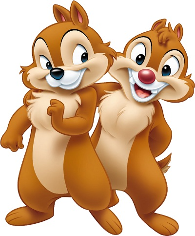

Это небольшое зверек размером мельче белки (длина тела около 13-16 см)
пушистый хвост составляет половину (и более) от длины тела.
Весит бурундук до 100 граммов. Своеобразная окраска шкурки не дает спустать
его ни с одним другим грызуном:
на фоне коричневого меха боков пять черных полос на спине,
перемежжающихся более светлыми участками.
Кроме того, по мордочкепроходят две светлые полосы:
одна - от носа к брови
вторая - из-под глаза к уху.
Кисточек на ушах, в отличие от белки, нет.
Присутствуют защечные мешки, в которых зверек перетаскивает свой корм.

Восточный бурундук - это мелкое грызуновое животное,
распространенное в различных регионах Восточной Европы и Азии.
Он имеет короткую пушистую шерсть, обычно серо-бурую или бурую, с черной полосой на спине.
Бурундуки активно копают норы и собирают пищу,
включая орехи и семена, которые они часто спрячут в земле.
Эти милые создания обладают хорошо развитой челюстью и острыми клыками.
Восточные бурундуки часто встречаются в лесистых и пригородных районах,
их поведение и адаптации в природе вызывают интерес у исследователей и натуралистов.

Чип и Дейл - это две анимированные бурундуки,
известные благодаря мультсериалу Disney.
Чип выделяется зелеными наручниками на руках и чертой лидера,
а Дейл - красными наручниками и немного более развязным характером.
Они часто втягиваются в разные комические приключения и противостояния, но всегда поддерживают друг друга.